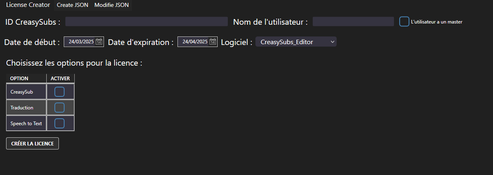
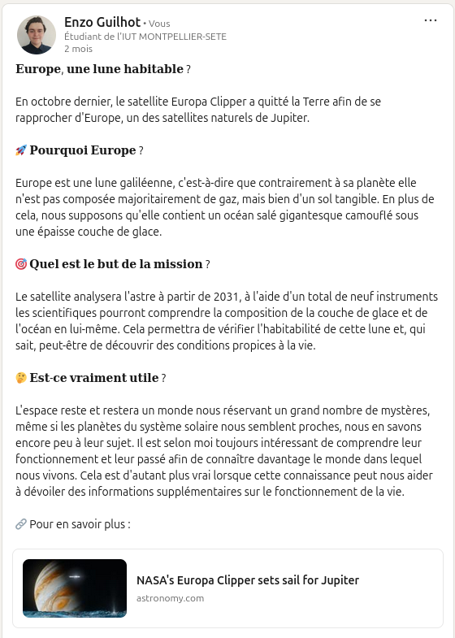

Mon portfolio d'apprentissage
Réaliser
Choisir et implémenter les architectures adaptées
Durant mon stage de seconde année, j'ai eu pour seconde mission de traduire une application Vue.js en une application C#.
Pour cela, j'ai recherché un framework adapté afin d'avoir des ressources techniques appropriées et de respecter les besoins décrits par la précédente application.
J'ai fini par choisir Blazor qui est un framework très similaire à Vue.js mais dédié au C#.
Faire évoluer une application existante
Lors du quatrième semestre, nous avons eu une SAE avec comme objectif de reprendre et d'améliorer une application de gestion de projets similaire à Trello. C'était un projet mélant le php et le javascript dans lequel nous devions corriger certaines problèmes et ajouter des fonctionnalités manquantes.
Intégrer des solutions dans un environnement de production
Pour revenir à mon stage, un des travails que j'ai réalisé pour ma mission principale est la réalisation d'applications avec interface. J'ai réalisé deux applications avec interface ainsi que quelques petites bibliothèques affiliées afin de créer un système de licences de vente. Dans cet objectif, j'ai appris à utiliser le framework .NET et j'ai mis en place une documentation technique afin que mes collègues puissent utiliser mon travail. Ce système utilise aussi des principes algorithmiques pour chiffrer les informations des licences.
Optimiser
Anticiper les résultats de diverses métriques
En troisième année, nous avons eu des cours de qualité de développement. Ces cours avaient pour but d'améliorer notre code dans sa lisibilité et son efficacité.
Dans cet objectif, il fallait justifier les choix et valider les résultats par une couverture de tests maximale ainsi qu'en mettant en place un protocole CI/CD pour automatiser les tests et le déploiement.
Profiler, analyser et justifier le comportement d'un code existant
En troisième, nous découvrons la programmation en scala, un langage de programmation fonctionnelle. Dans ces cours nous cherchons à diminuer la dette technique de certaines fonctions grâce à plusieurs procédés du langage. Il est donc imporant de choisir les meilleurs algorithmes et structures de données usuelles dans cet objectif de baisse de dette. De plus, celui-ci offre également une grande refactorisation du code améliorant sa lisibilité et sa compréhension permettant une analyse simplifiée.
Choisir et utiliser des bibliothèques et méthodes dédiées au domaine d'application
Pour en finir avec mon stage, l'interface traduite et mes interfaces utilisent toutes un système de fichiers JSON. L'interface a des préréglages enregsitrés sous forme de fichiers JSON afin d'écrire une ligne de commande FFMPEG alors que mes interfaces intègrent des options dans les licences, les options sont proposées en fonction du fichier JSON sélectionné.
J'ai donc dû utiliser diverses fonctions ainsi que la bibliothèque adéquate afin de mettre en place ces systèmes sur mes applications C#. Les systèmes s'appuyent sur des schémas de raisonnement en plus des fonctions pour la création, la modification et la récupération des fichiers JSON.
Collaborer
Organiser et partager une veille numérique
Lors du cinquième semestre de BUT, nous avons eu l'occasion d'effectuer une veille numérique en petit groupe et sur un total de trois sujets. Pour ma part, nous avons surveillé les nouveautés concernant les voitures électriques, l'impact écologique des cryptomonnaies et l'avancée dans le domaine spatial.
Nous pouvons retrouver une trace de cette veille sur mon profil LinkedIn dans lequel j'ai partagé un post concernant le domaine spatial. De part la mise en place de la veille en équipe et de la publication sur mon profil nous pouvons dire que nous avons effectué le travail en développant une communication efficace et collaborative.
Identifier les enjeux de l'économie de l'innovation
Nous avons étudié en cours qu'un des plus gros enjeux dans l'innovation est l'écologie. L'informatique en général a d'énormes répercussions sur l'écologie, il y a donc de plus en plus de normes et de lois mises en place complexifiant les contraintes juridiques.
La fresque du numérique, une activité pour promouvoir l'importance de l'écologie dans l'informatique, nous a notamment montré que l'écologie est importante durant tout le cycle de vie des appareils et logiciels.
Guider la conduite du changement informatique au sein d'une organisation
En seconde année, nous avons à plusieurs reprises abordé et analysé le changement informatique au sein d'une organisation.
En effet, nous avions une description d'une organisation avec ses problèmes logistiques puis nous devions proposer un système d'informations dans l'idée d'une évolution informatique afin de palier les différents problèmes.
Accompagner le management de projet informatique
J'ai eu l'occasion d'être Scrum Master dans la SAE du semestre trois, c'est-à-dire FormatIUT. Nous avons donc dû mener ce projet de A à Z en étant une équipe de six étudiants, cela comprends donc le management du projet pour lequel nous devions s'accorder.
De plus, étant une équipe constituée de personnes avec diverses connaissances et compétences, nous avons travaillé en tant qu'équipe pluridisciplinaire en plus d'avoir veillé au respect des règles juridiques par le respect du RGPD et des licences des images utilisées.